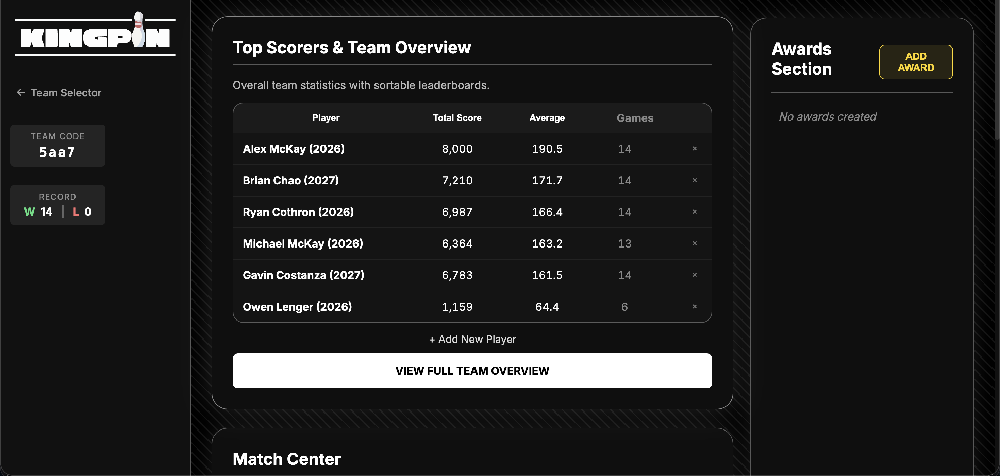
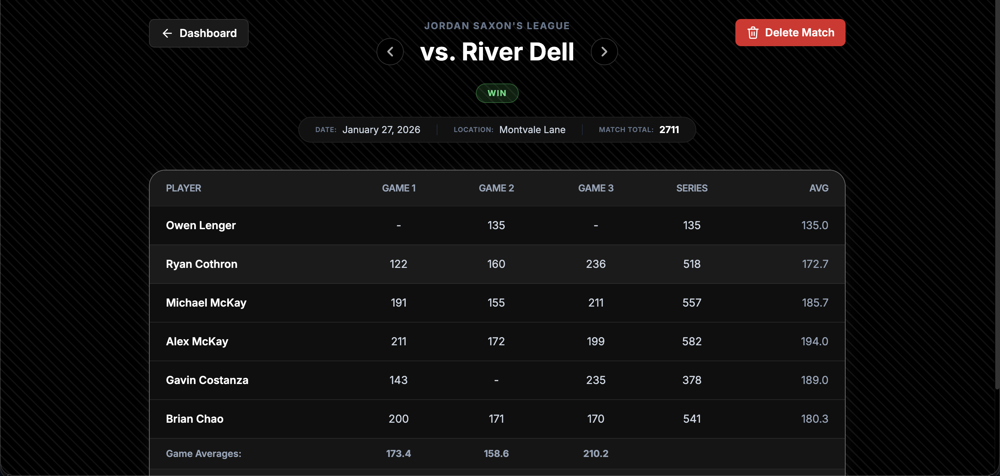
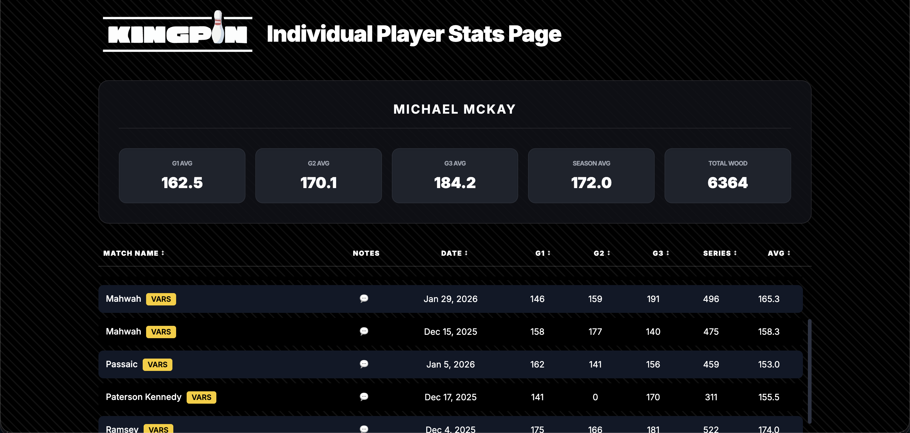
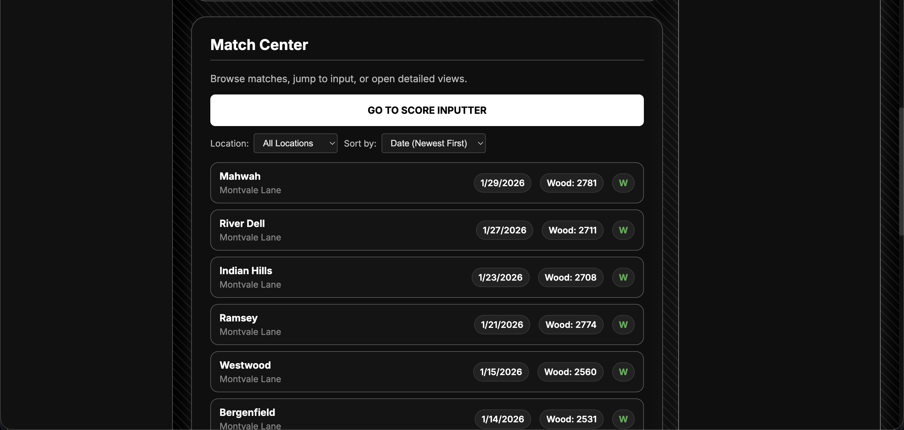

Overview
KingPin is a team-developed full-stack bowling tracking application built for Mr. Saxon and other coaches. It provides a clean UI interface for managing team data, player rosters, and match statistics with real-time computed averages and seamless Excel export functionality.
My Role: I led the backend development, designed and implemented the Firestore database architecture, managed hosting infrastructure, and built the email notification system.
Highlights
- Team management with unique team codes
- Player roster creation and management
- Match tracking with automatic stat computation
- Real-time computed averages and statistics
- Team codes for player access to stats
- Excel export for data portability
- Clean, intuitive UI interface
Images




Features
- Coach Dashboard — Create teams, add players, and input match data with an intuitive interface.
- Player Stats — Automatic calculation of averages, high scores, and performance trends.
- Team Codes — Share unique codes with players so they can view their own and teammates' stats.
- Match Tracking — Log individual games and matches with detailed frame-by-frame scoring.
- Excel Export — Export all data to clean, formatted spreadsheets anytime.
Tech Stack
Frontend
- HTML5 & CSS3 for structure and styling
- Vanilla JavaScript for interactivity
- Responsive design for all devices
Backend
- Node.js server environment
- Firebase Firestore for real-time database
- Cloud-based data persistence